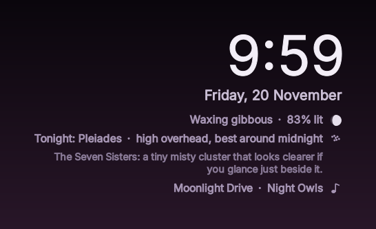
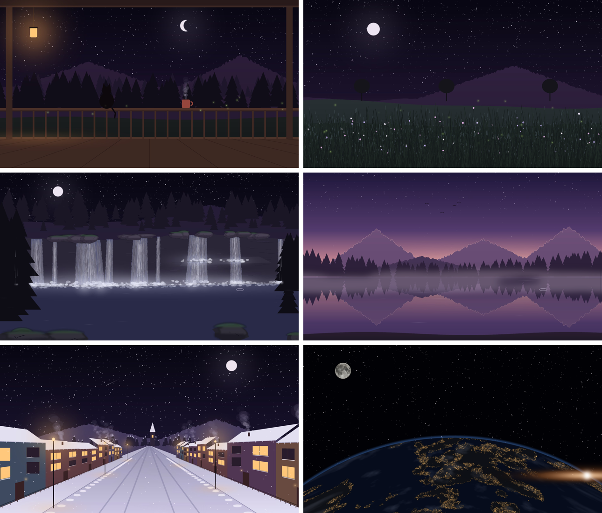
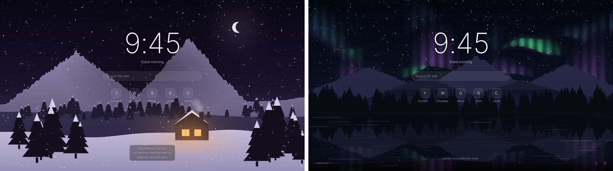
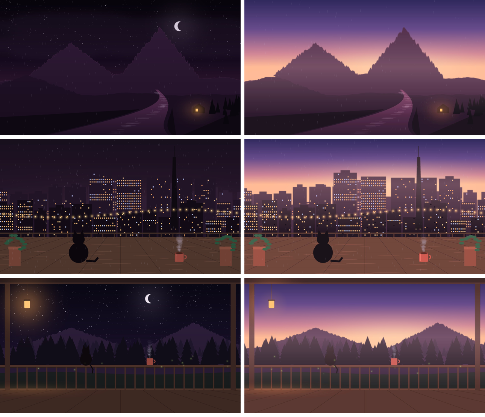

Each scene shows tonight's real moon, turns to dawn colours around your actual sunrise, and follows the weather where you live: rain, storms with silent lightning, snow, mist and drifting cloud. On Diwali, lanterns rise and diyas float on the water; on New Year's Eve, soft fireworks bloom over the hills.
Nightfall turns a Windows 10 PC into a calm, moonlit place. Everything is handmade, light on your computer, and free for personal use.
Three small things
The moon clock
A clock that sits on your desktop with tonight's moon phase, the best constellation to look for, and what's playing. When you step away, your desktop drifts into a night sky.

Live wallpapers
Eighteen scenes play behind your icons: rain on a city, a porch in the forest, northern lights over a lake. They pause the moment a window covers them, so they cost nothing while you work.

A new tab page
For Brave and Chrome: the same scenes, a clock, your favourite sites, live weather and a short line to read before you get going.

A sky that follows yours

Things to try
- Catch a shooting star by clicking it as it falls, and make a wish.
- Hold the sky for a moment to start a meteor shower.
- Drag across the stars to draw your own constellation.
- Click the moon to see its phase and what's up tonight.
- Hold Ctrl and move the mouse: fireflies drift to you, grass parts, birds scatter.
- Double-click the sky for a minute of rain, or snow.
- Click the cat on the porch or the rooftop.
- Keep an eye out for a comet, an owl, a fox or a whale.
Get it
Open PowerShell and paste this line. The installer asks before it changes anything, and builds the clock on your own PC, so there's nothing unknown to run.
irm https://raw.githubusercontent.com/mayank-singh-io/Nightfall-Desktop/main/install.ps1 | iex
- Press Start, type PowerShell, and open it.
- Paste the line above and press Enter.
- Answer the few questions it asks. The moon clock starts by itself when it's done.
- For the new tab page, open brave://extensions, turn on Developer mode, and load the nightfall-tab folder.
Prefer to look first? Download the latest release or browse the code. To remove everything later, run the same line with uninstall.ps1 instead.